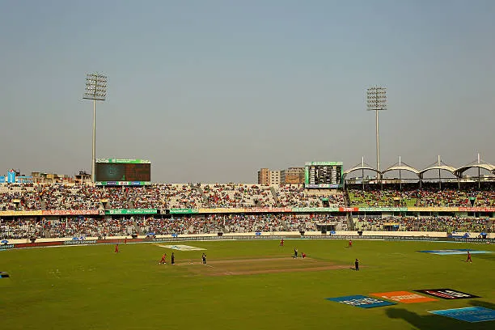

The Mirpur Rollercoaster: Last-Minute Tickets, Stadium Chaos, and Match-Day Magic
Publushed on:

The Miracle Permission
It all started back when I was in class 7 or 8. Out of nowhere, the guys dropped a massive plan: we were going to watch the Bangladesh vs. West Indies ODI match live at the Shere Bangla National Stadium in Mirpur. My heart sank instantly. My parents were incredibly strict about me going far from home without them, so I was 100% sure I’d be left behind. But my friends weren’t backing down. One evening, a few of them actually showed up at my house to beg my mother for permission. I was a nervous wreck; as they called out for her, I literally begged my mom not to go out and talk to them, terrified of the rejection. After a few awkward, failed attempts, the guys finally left. But mothers see right through you. She noticed how desperately I wanted to go, and how scared I was to even ask. Suddenly, out of nowhere, she looked at me and gave me her permission. I was absolutely overjoyed! I immediately called the guys to tell them I was in, and they were just as shocked and hyped as I was.
The Countdown and The Chase
There is nothing quite like the electric anticipation of match day. My morning started with pure joy, counting down the agonizing hours until it was finally time to head out. Our crew—Rafat, Rifat, Tanjim, Pial, and I—met up at our usual spot by the water pump near Rafat’s house, buzzing with excitement. We piled into a CNG, and as we neared Mirpur, the distant, thunderous roar of the Shere Bangla National Stadium crowd hit us, instantly spiking our adrenaline. Since we didn't have tickets, we had to make a frantic, last-minute deal with a black-market seller, only to find ourselves completely bewildered by the maze of entry gates. But the moment we finally pushed through the turnstiles and stepped inside, all the chaos vanished. The atmosphere shifted instantly; the sheer scale, the sea of colors, and the deafening cheers left me completely breathless, wondering if I had just stepped into a whole different world.
Inside the Cauldron
Once inside, the thrill of finally watching Bangladesh perform live took over. The match was already underway, with the Tigers batting first. It took a few overs to shaking off the chaotic journey, find our seats, and settle in, but once I did, I was completely locked into the game, celebrating every single run. Bangladesh set a solid target, making for a thrilling first half! During the innings break, we grabbed some lunch inside the stadium—though it was honestly a total rip-off. The vendors definitely took advantage of the fact that fans couldn't leave, serving poorly organized food at sky-high prices.
By the second innings, the tension was palpable as the West Indies came out to bat. It turned into an absolute nail-biter, a fierce contest that went right down to the wire, but unfortunately, the West Indies took the win. Seeing our team lose on home turf was deeply frustrating, but that’s the beautiful, unpredictable nature of sports. As the match ended, we poured out of the stadium alongside thousands of other fans. The streets outside were an absolute sea of people, but despite the loss and the massive crowds, we left the stadium with smiles on our faces, completely buzzing from an unforgettable day.
Heading Home & Memories That Last
Leaving the stadium turned out to be a whole new challenge. The streets were absolute chaos, with thousands of fans flooding the roads all desperately searching for a ride. Finding an empty vehicle felt nearly impossible, so we finally managed to book an Uber. As soon as the car arrived, we piled in, letting out a collective sigh of relief. The entire ride back was filled with endless chatter, dissecting every over, every boundary, and every missed opportunity of the match. Eventually, the car pulled up right back where our journey had started that morning. We said our goodbyes and headed to our respective homes. It was, without a doubt, the most delightful highlight of my day. Some moments just have a way of defining our youth and making our childhood unforgettable—and this day with the guys was definitely one of them.